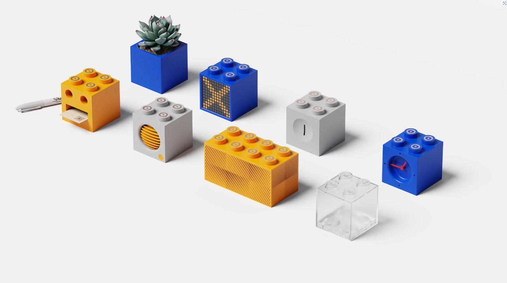
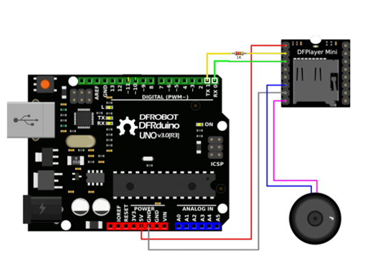
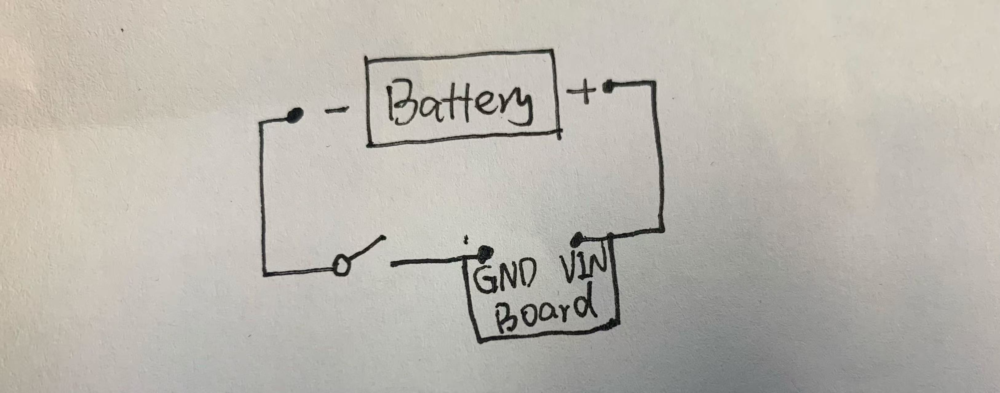
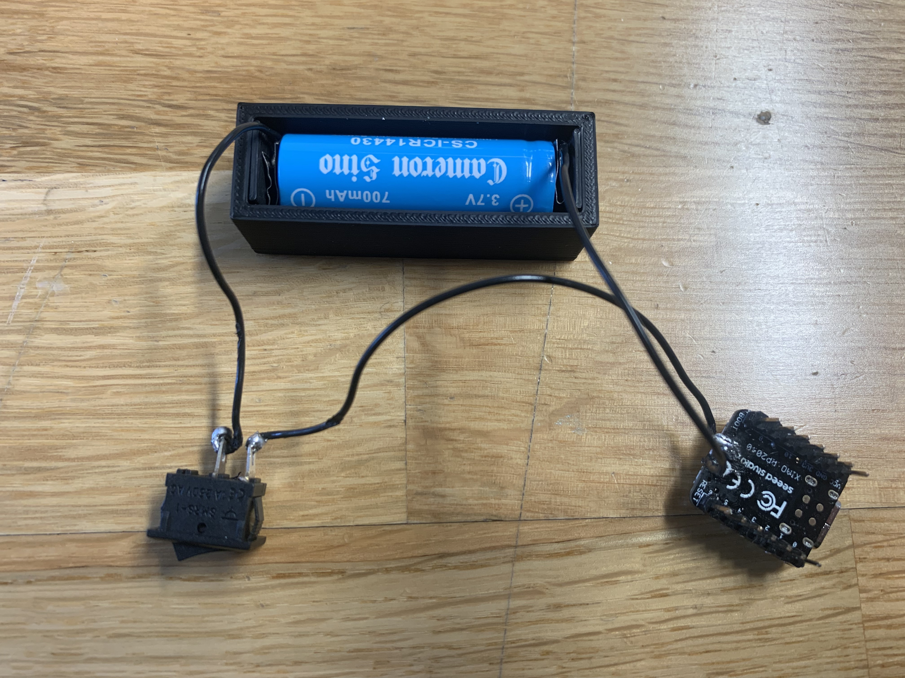
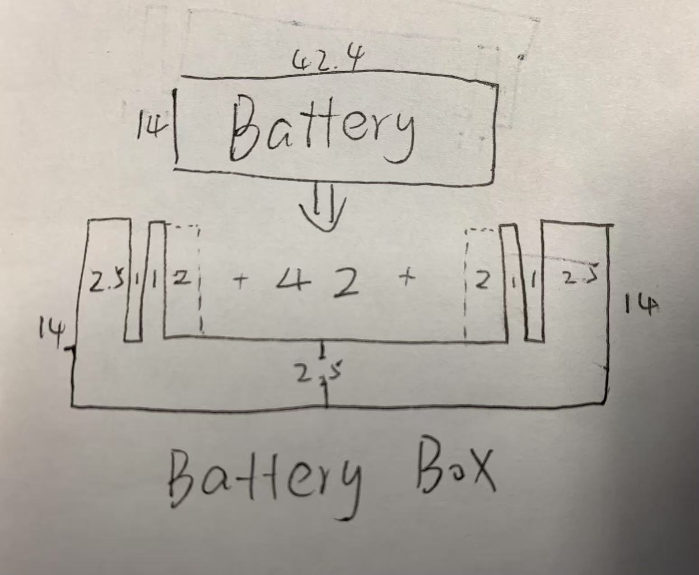
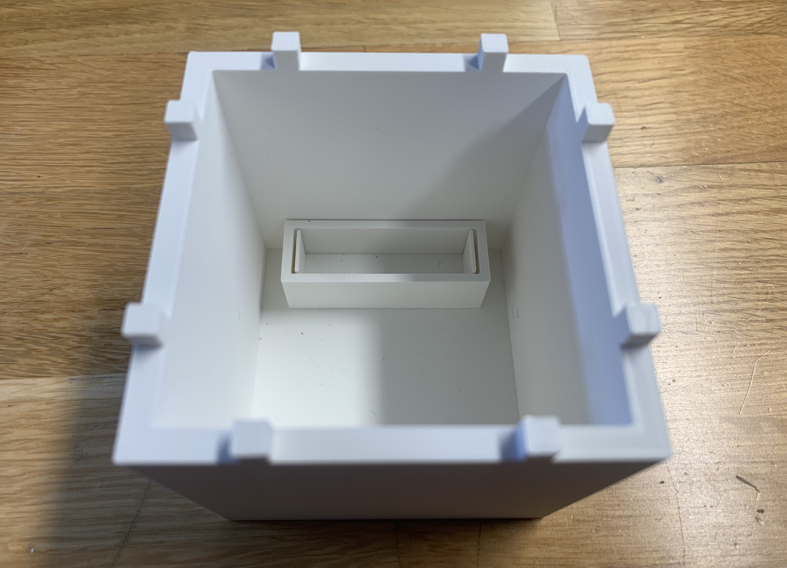
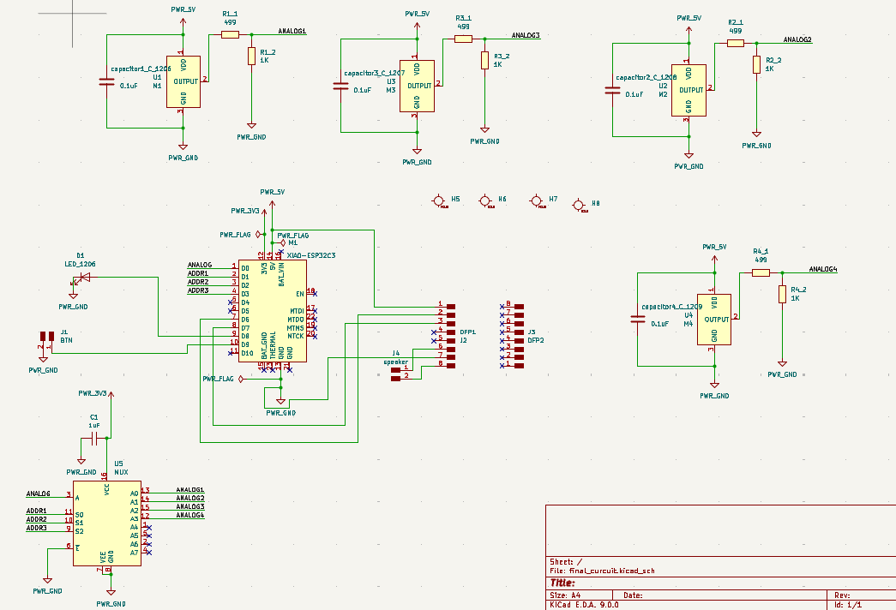
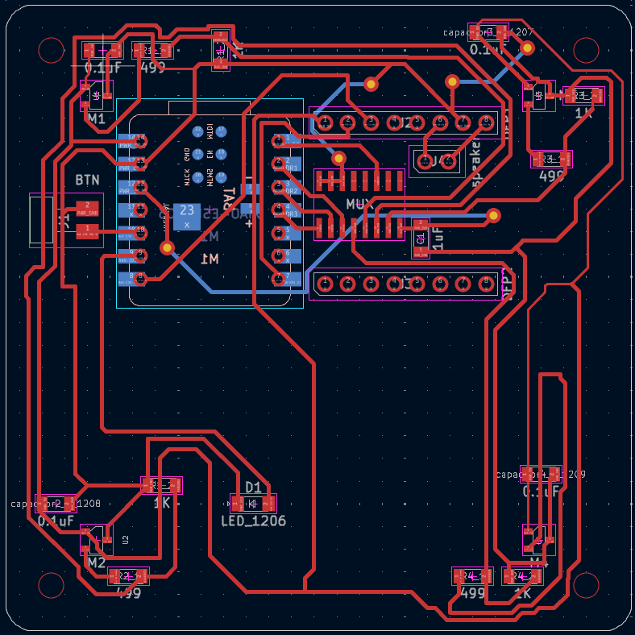
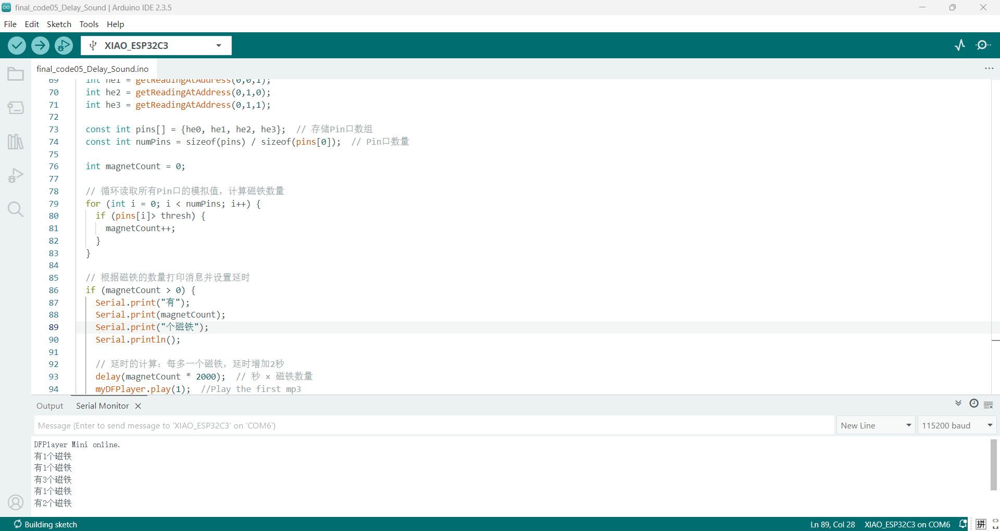
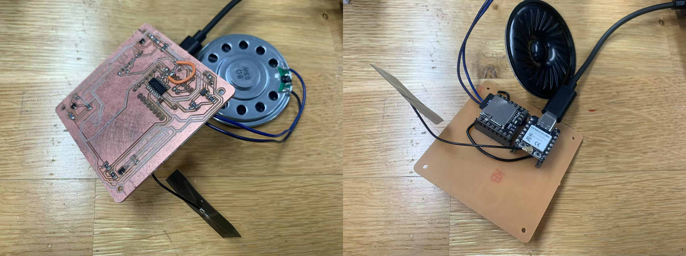

Insight: I always find it difficult to remember the position of each key, so I want to design a toy that allows me to play by arranging the keys. This would give me a greater sense of space while playing music.
Idea: A toy that can play different music by changing the positions of the piano key blocks. Each piano key block contains a piano sound. When the block is placed on the tray, it will play its sound in sequence according to the arrangement.
1. After pressing the tray button, the piano key blocks will play the audio sequentially according to their positions. Each key slot on the tray is attached with a different number of magnets (for example, the first position has one magnet, the second position has two magnets, and so on). When the button on the tray is pressed, the connected ESP board sends information to each ESP board, signaling the start of the overall response. Each piano key block has four capacitors, which can sense the number of magnets and thus determine its position on the tray. For each subsequent position, the audio playback is delayed by 1 second (for example, the first piano key block plays the audio immediately, while the second piano key block waits for one second before playing the audio).
2. Each piano key block stores different audio files in the DFPlayer. When the button on the key block is pressed, the corresponding audio of that key block will play.
3. Each time an audio is played, the LEDs and other indicators will light up.

Material: a XIAO ESP32C3 board, a DFPlayer Mini(DFP0299), a speaker.
Sketch: Here is the basic connection I get from here.

Here is the code.
Here is the simplified code match the ESP32C3 board.
Material: a XIAO ESP32C3 board, a battery switch, two electrode metal plates(2mm), a battery.
Sketch:
Block: 80mm*80mm*80mm (5mm thick)
Battery:42.4mm*14mm*14mm (battery box: 2.5mm thick)




Here is the freeCAD file.
Outside: A led light, a button, a battery button
Inside: A ESP32C3, a DFPlayer Mini(DFP0299), a Multiplexer(CD74HC4051M96), four capacitors, a speaker,.
I put the ESP and DFPlayer at the back of the PCB board, I also dig four holes and plan to use screws to secure the PCB board inside the key block (this way, I only need to glue the screws inside the keys, while keeping the PCB board removable).




Here is the code that implements the functionality of determining the delay in seconds before playing music based on the number of magnets; the more magnets, the longer the delay.
Here is the code that implements the functionality of determining the audio delay time based on detecting the number of magnets.
Here is the code that is an example of using a Multiplexer (CD74HC4051M96) to expand the analogRead pin ports..
5.12 ~ 5.17: Finish the 3D printed battery block as experiment.
5.19 ~ 5.23: Finish the code and PCB board.
5.26 ~ 5.30:
6.2 ~ 6.6: